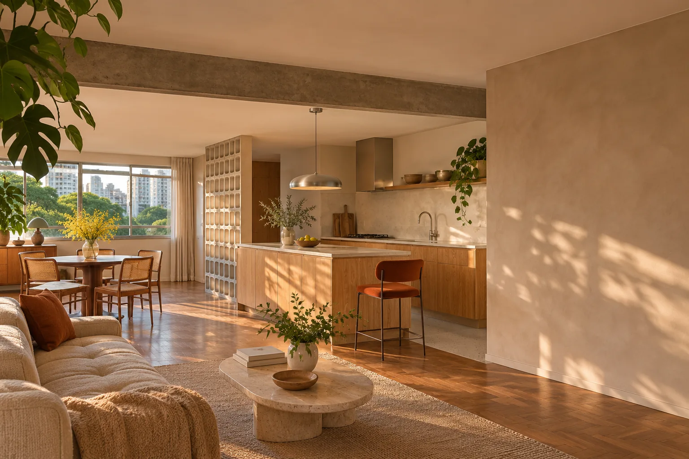

Uma casa que acompanha você.
Reformas de interiores com escolhas claras, de uma atualização pontual a um apartamento inteiro.
Pedir uma visita técnica
O que podemos reformar
- Cozinhas e banheiros
- Revise o uso do espaço, as instalações e os acabamentos de áreas molhadas.
- Ambientes completos
- Organize a reforma de um apartamento com etapas planejadas por cômodo.
- Pisos e acabamentos
- Renove pisos, revestimentos e pintura em uma intervenção pontual.
Planeje sua visita técnica.
Com o tipo de obra, a área e a ocupação do imóvel, a equipe consegue preparar a primeira conversa.
O que a equipe receberia
Simulação concluída. Nenhum pedido foi enviado.